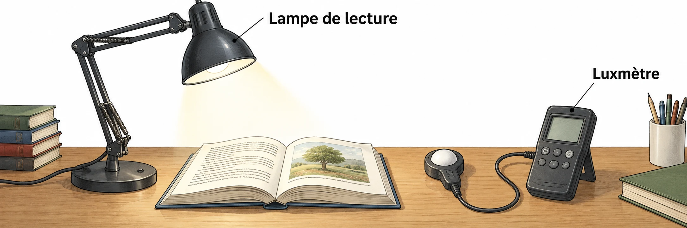

OBSERVER · EXPÉRIMENTER · EXPLIQUER
Choisir une lampe de lecture
Le club veut une lampe sans prise. Compare les modèles et vérifie l’espace disponible.

✎ Garde ta feuille à côté de toi.Ordinateur : manipulations et mesures simulées. Papier : relevés, réponses, calculs et croquis. Matériel réel : essai complémentaire si disponible.
Des observations pour expliquer
- N4 : compare toutes les exigences, pas seulement le prix.
- D1–D3 : teste les deux zones du dossier et garde un dessin coté sur papier.
Appuie ton explication sur une valeur, un changement observé ou une comparaison. Distingue ce que montre le modèle et ce qui reste à vérifier.